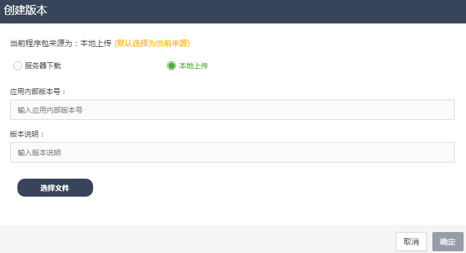

应用管理
功能介绍：应用管理界面主要为用户提供DCOS系统中所有应用模块的概要信息。
在应用管理列表中，展示了每一个应用的系统名称、模块名称、CPU（核）、内存、容器数、扩缩容策略、状态、创建时间等信息。图2.2

图2.2
删除应用：当用户在应用管理列表中选中一个应用模块后，点击操作下的“删除应用”按钮，系统弹出“确定要删除该应用”的选项框，点击“确定”按钮后，即可在系统中删除这个应用。
搜索应用：当用户在应用管理列表右上方的“search”框中，输入应用的信息后，系统即可查找出，所有匹配该信息的应用模块。
应用详情
在应用管理列表中，选中一个应用模块后，点击所选应用的模块名称，进入应用管理详情页面。
在应用详情页面中，展示了这个应用模块的模块名称、运行状态、运行实例数、应用ID、容器规格、创建时间、镜像地址、弹性扩缩、集群信息等内容。图2.2.1
图2.2.1
应用发布
用户点击应用详情界面上的“发布”按钮后，系统弹出应用发布的弹窗，弹窗中展示了每个应用版本包的文件名、版本号、文件大小、上传时间、操作者、状态、备注等信息；用户点击“发布”按钮后，即可对这个应用进行发布操作。图2.2.2
图2.2.2
创建新版本-应用上传
用户在“应用发布”的弹窗中，点击“创建新版本”的按钮后，系统弹出“创建版本”的弹窗，弹窗中展示了当前应用的程序包来源方式，用户可以选择“服务器下载”方式或是“本地上传”方式，上传一个程序文件。图2.2.3-1

图2.2.3-1
本地上传：当用户点击“本地上传”按钮时，在弹窗中，输入应用内部版本号、版本说明后，点击“选择文件”按钮，选中本地的一个程序包文件，进行上传，上传成功后，点击“确定”按钮，即可生成一个应用版本包，界面跳转至“应用发布”弹窗。
服务器下载：当用户点击“服务器下载”按钮时，系统弹出“服务器下载”的弹窗，输入服务器ID、服务器端口、文件名、服务器用户名、服务器密码、存放路径等信息后，点击“确定”按钮后，即可生成一个应用版本包，界面跳转至“应用发布”弹窗。图2.2.3-2

图2.2.3-2
应用暂停
用户点击应用详情界面上的“暂停”按钮后，系统弹出“确认暂停”的提示框，用户点击“确定”按钮后，系统即成功暂停这个应用模块，此应用模块实例数会变为0。图2.2.4
图2.2.4
取消发布
用户点击应用详情界面上的“取消发布”按钮后，系统弹出“确认取消发布”的提示框，用户点击“确定”按钮后，系统即会根据此应用的运行状态进行判断，当应用运行正常时，系统提示“该应用运行正常，不需要取消发布”；当应用状态为deploying的时候，即会成功取消当前发布。图2.2.5
图2.2.5
更多操作-重启应用
用户点击应用详情界面“更多操作”下的“重启应用”按钮，系统弹出“应用重启”的弹窗，弹窗中显示了这个应用所在的资源池，用户选择了需要进行重启的资源池，点击“确定”按钮后，即可成功重启这个应用模块。图2.2.6
图2.2.6
更多操作-手动扩缩
用户点击应用详情界面“更多操作”下的“手动扩缩”按钮，系统弹出“手动扩缩”的弹窗，弹窗中显示了这个应用模块的“当前实例数”与“可扩展的最大实例数”，用户可以设置“目标实例数”，然后点击确定按钮，即可对这个应用模块进行扩缩操作。图2.2.7
图2.2.7
更多操作-弹性配置
用户点击应用详情界面“更多操作”下的“弹性配置”按钮，系统弹出“弹性配置”的弹窗，弹窗中显示了配置弹性策略的信息，用户需选择“是否自动扩缩”、“最小实例数”、“最大实例数”、“冷却时间”等信息，在”添加规则”的选项框中，可以选择”定时、CPU、内存、线程“等类型策略。图2.2.8-1
图2.2.8-1
定时策略:用户选择了“定时策略”后，弹窗中弹出“触发时间”与“实例数”的输入框，用户选择“是否启用”和输入触发时间与实例数后， 可以创建一条或者多条定时策略。图2.2.8-2
图2.2.8-2
CPU策略:用户选择了“CPU策略”后，弹窗中弹出“最小阈值、最大阈值、扩缩比例”的取值框，用户选择了“是否启用”和在取值框中输入以上信息后，可以创建一条CPU策略信息。图2.2.8-3
图2.2.8-3
内存策略:用户选择了“内存策略”后，弹窗中弹出“最小阈值、最大阈值、扩缩比例”的取值框，用户选择了“是否启用”和在取值框中输入以上信息后，可以创建一条内存策略信息。图2.2.8-4
图2.2.8-4
线程策略:用户选择了“线程策略”后，弹窗中弹出“最小阈值、最大阈值、扩缩比例”的取值框，用户选择了“是否启用”和在取值框中输入以上信息后，可以创建一条线程策略信息。图2.2.8-5
图2.2.8-5
性能监控
在应用详情界面中，用户可以查看下方页面的“性能监控”，性能监控中展示了这个应用的容器平均CPU、容器平均内存、JVM指标、线程数、并发数和容器数等六个趋势图，点击每个趋势图的右上角图标，系统弹出”按天、周、月统计“的监控信息趋势图（以下以cpu和内存为例）。图2.2.9
图2.2.9
事件查看
在应用详情界面中，用户可以查看下方页面的“事件查看”，事件查看中展示了这个应用的操作事件记录，每条事件中展示了操作事件、事件结果、操作详细信息与时间等信息。图2.2.10
图2.2.10
容器管理
在应用详情界面中，用户可以查看下方页面的”容器管理“，容器管理中展示了这个应用的所有容器，在容器列表中展示了每个容器的容器ID、节点、端口、所属集群、启动时间、运行状态等信息。图2.2.11-1
图2.2.11-1
操作-性能监控：用户点击容器管理操作下的“性能监控”后，系统弹出单个容器的性能监控趋势图，用户可以查看单个容器的cpu、内存、jvm、线程数、并发数等趋势图信息。图2.2.11-2
图2.2.11-2
操作-重启：用户点击容器管理操作下的“重启”后，系统弹出“容器重启”确认框，用户点击确认按钮后，即可对选中的容器进行重启操作。图2.2.11-3
图2.2.11-3
操作-ThreadDump：用户点击容器管理操作下的“ThreadDump”后，系统弹出显示ThreadDump日志的弹窗，用户可以查看容器的ThreadDump日志信息。图2.2.11-4
图2.2.11-4
操作-查看日志： 用户点击容器管理操作下的“查看日志”后，系统弹出显示容器日志的弹窗，用户可以查看容器的日志信息。
操作-日志下载：用户点击容器管理操作下的“日志下载”后，系统弹出显示容器日志列表的弹窗，用户可以点击日志名称，进行下载日志信息。
系统信息：在应用详情界面中，用户可以查看下方页面的”系统信息“，系统信息中展示了这个应用配置的域名、检查地址、公网IP、私网IP、HaProxy服务类型、HaProxy服务端口、Bamboo节点、开通防火墙端口、接口人姓名、联系电话、邮箱地址、开发商等信息。图2.2.12
图2.2.12
创建应用
在应用管理页面中，点击“创建应用”按钮，系统即可弹出创建应用的弹窗。
发布配置：在创建应用的“发布配置”中，用户可以对发布环境进行选择，发布环境由平台配置中的基础数据列表中的ENV_TYPE配置而来；资源池列表中显示了系统中所有的资源池名称，用户可以选择一个资源池；发布构建方式中，系统提供“镜像上传”和“本地挂载”两种方式；程序包来源中提供“本地上传”和“服务器下载”两种方式。图2.2.13-1
图2.2.13-1
应用配置：在创建应用的“应用配置”中，系统名称列表中显示了DCOS系统中所有的系统名称，用户可以选择一个系统名称，也可以在输入框中输入一个系统名称；再输入模块名称和服务路由策略。图2.2.13-2
图2.2.13-2
容器配置：在创建应用的“容器配置”中，用户需要选择CPU、内存、磁盘空间和实例数等配置信息；在镜像地址的下拉框中，用户可以选择一个镜像地址，也可以手动输入一个镜像地址；用户需在命令的输入框中，输入启动命令；在docker参数配置中，输入“键、值”信息；在环境变量中，输入“键、值”信息；在约束中，选择一个约束信息。图2.2.13-3
图2.2.13-3
网络配置：在创建应用的“网络配置”中，用户需在三种网络模式“host、bridge、user”中选择一种，选择模式后，按照所选模式的要求，选择容器端口、主机端口与网络协议等信息。图2.2.13-4
图2.2.13-4
存储配置：在创建应用的“存储配置”中，用户需配置容器目录、主机目录与读写模式；在主机目录的下拉框中，显示的是系统中所有未挂载的卷名称。图2.2.13-5
图2.2.13-5
健康检测：在创建应用的”健康检测”中，用户需在三种协议”COMMAND、HTTP、TCP”中选择一种，并输入”COMMAND、宽限期、间隔、超时、连续失败最大次数“等信息。图2.2.13-6
图2.2.13-6
其他可配置：在创建应用的“其他可配置”中，用户可以输入接口人信息“姓名、联系方式、邮箱地址、开发商信息”，还可以输入系统配置信息“域名、公网ip、私网ip、bamboo节点、开通防火墙端口、健康检测地址、HaProxy服务类型、HaProxy地址端口”等信息。图2.2.13-7
图2.2.13-7
创建：用户输入了以上的创建应用必填项信息后，点击”创建“按钮，即可创建一个应用模块。创建完成后，系统跳转应用管理列表页面。